شبنم رضاپور
کسی که PDFها را راضی کرد محتوایشان را بیکموکاست لو بدهند.
این جزوه با استفاده از جزوهساز پاپیروس و به صورت خودکار تولید شده است. ممکن است شامل خطا یا برداشت نادرست باشد و نیازمند بررسی و بازبینی مجدد است.
موضوع جلسه، سلولهای سیستم ایمنی و گذار از ایمنی ذاتی به ایمنی اختصاصی است. جلسه جایگاه و شمارش سلولهای ایمنی، خونسازی و ردههای سلولی، عملکرد سلولهای ایمنی ذاتی و تطبیقی، ارائه آنتیژن، و نقش سلولهای B، T و NK را بررسی میکند.
سلولهای ایمنی در خون و لنف گردش میکنند. بخشی از آنها بهصورت سازمانیافته در اندامهای لنفاوی حضور دارند و گروهی دیگر بهطور دائم یا موقت در بافتها مستقر میشوند. سیتوکینها (cytokines)، آنتیبادیها و کمپلمان (complement) ارتباط میان این سلولها و عملکردشان را تقویت میکنند.
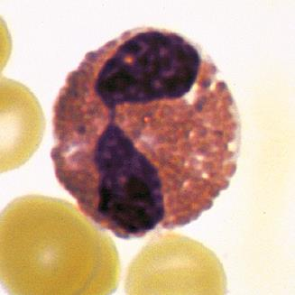
ائوزنوفیل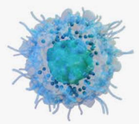
سلول کشنده طبیعی (natural killer cell)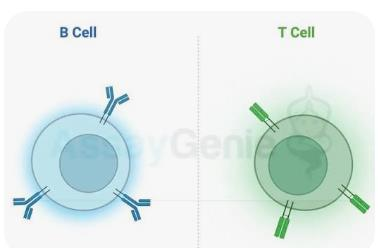
تصویری شماتیک از لنفوسیتهای T و B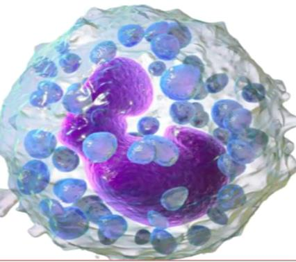
بازوفیلدر جدول شمارش سلولهای خون، میانگین تعداد و محدوده طبیعی در هر میکرولیتر چنین آمده است:
| سلول | میانگین در هر میکرولیتر | محدوده در هر میکرولیتر |
|---|---|---|
| لکوسیتها (white blood cells; leukocytes) | ۷۴۰۰ | ۴۵۰۰-۴۰۰۰ تا ۱۱۰۰۰ |
| نوتروفیلها | ۴۴۰۰ | ۱۸۰۰ تا ۷۷۰۰ |
| ائوزینوفیلها | ۲۰۰ | صفر تا ۴۵۰ |
| بازوفیلها | ۴۰ | صفر تا ۲۰۰ |
| لنفوسیتها | ۲۵۰۰ | ۱۰۰۰ تا ۴۸۰۰ |
| مونوسیتها | ۳۰۰ | صفر تا ۸۰۰ |
در خون محیطی پنج دسته اصلی سلول را در نظر میگیریم: نوتروفیل، ائوزینوفیل، لنفوسیت، مونوسیت و بازوفیل. این سلولها در CBC شمارش میشوند؛ در این مرحله نیازی نیست به زیرگروههایی مانند bandها بپردازیم.
تعداد کل WBC معمولاً حدود ۴۰۰۰-۴۵۰۰ تا ۱۱۰۰۰ سلول در هر میکرولیتر میباشد.
| نوع لکوسیت | درصد یا میزان ذکرشده در WBC |
|---|---|
| نوتروفیل | حدود ۴۰ تا ۷۰ درصد |
| لنفوسیت | حدود ۲۰ تا ۴۰ درصد |
| مونوسیت | حدود ۱ تا ۸ درصد |
| ائوزنوفیل | حدود ۲ تا ۵ درصد (این مورد توسط استاد گفته نشده و از منابع خارجی اضافه شده) |
| بازوفیل | ممکن است دیده نشود یا بسیار کم باشد؛ صفر تا نیم درصد یا صفر تا یک درصد |
وجود حدود صفر تا یک درصد بازوفیل معمولاً بهتنهایی نشاندهنده مشکل خاصی نیست؛ اما افزایش آن میتواند مهم باشد و گاهی با بدخیمیهای خونی یا رخداد دیگری در بدن همراه است. بنابراین، هنگام بررسی لام خون محیطی باید بازوفیل را در کنار سایر یافتهها در نظر گرفت.
دکتر گلافشان، به شوخی و با لحن طنز، دیدن بازوفیل در لام را با عبارت «یا خدا، جغد شوم هماتولوژی!» توصیف میکرد؛ منظور این بود که افزایش آن میتواند نگرانکننده باشد، نه اینکه مشاهده یک بازوفیل بهخودیخود غیرطبیعی باشد.
در لام خون محیطی، WBC، RBCها (گلبولهای قرمز) و پلاکتها نیز دیده میشوند. تعداد پلاکت معمولاً حدود ۱۵۰ هزار تا ۴۵۰ هزار و تعداد RBC حدود پنج میلیون است.
تقریباً همه سلولهای ایمنی از سلول بنیادی خونساز (hematopoietic stem cell) منشأ میگیرند. این سلول در مغز استخوان قرار دارد و توان خودنوزایی (self-renewal) و تمایز دارد: میتواند سلولهای مشابه خود را تولید کند و به ردههای سلولی گوناگون تمایز یابد. از آن با عنوان multipotential نیز یاد میشود.
سلول بنیادی خونساز وارد دو مسیر اصلی تمایز میشود:
سلولهای حاصل از stem cell را progenitor یا precursor مینامند. این دو اصطلاح دقیقاً یکسان نیستند: progenitorها مراحل ابتداییتری دارند و به stem cell نزدیکترند. با پیشرفتن مسیر، سلولها به precursorها و سپس به شکلهای نهایی نزدیک میشوند؛ این سلولهای نهایی دیگر به سلول دیگری تقسیم نمیشوند. بااینحال، در کتاب ابو العباس این دو اصطلاح تقریباً بهجای یکدیگر به کار رفتهاند. تفاوت دقیق آنها در این بخش موضوع بحث نیست و در هماتولوژی با جزئیات بیشتری بررسی میشود.
دو progenitor اصلی عبارتاند از:
نمودار کلی، مسیرهای میلوئیدی و لنفوئیدی را نشان میدهد.
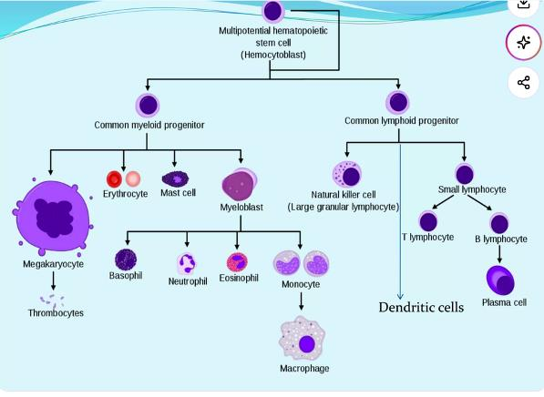
تصویر 7در مسیر میلوئیدی، شاخههایی به سلولهای خونی مختلف، ازجمله گرانولوسیتها، مونوسیتها، سلولهای دندریتیک، mast cellها، اریتروسیتها و megakaryocyteها میرسند. Megakaryocyte سلول مادری تولیدکننده پلاکت است. تعداد پلاکتهایی را که از یک megakaryocyte حاصل میشوند بهعنوان فعالیت کلاسی بررسی کنید؛ در کلاس پاسخ را جستوجو نکنید و به یکدیگر هم نگویید.
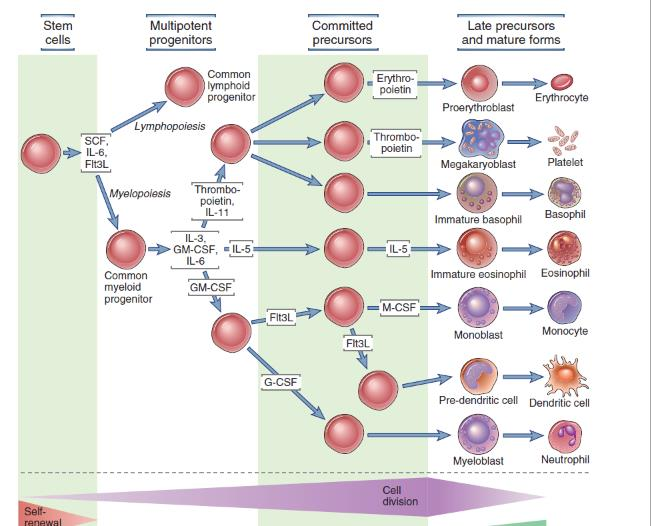
تصویر 9| مسیر یا سلول | اطلاعاتی که در نمودار و توضیح آمده است |
|---|---|
| Common myeloid progenitor | منشأ شاخههایی به سلولهای خونی مختلف، ازجمله گرانولوسیتها، مونوسیتها، سلولهای دندریتیک، mast cellها، اریتروسیتها و megakaryocyteها |
| Common lymphoid progenitor | یکی از دو progenitor اصلی در تصویر کلی |
| Megakaryocyte | سلول مادری تولیدکننده پلاکت |
رده میلوئیدی در نمودار کتاب ابو العباس با جزئیات بیشتری نشان داده شده است، زیرا شاخههای متعددی دارد. آن نمودار بر رده میلوئیدی تمرکز دارد و رده لنفوئیدی را نشان نمیدهد. در تصویر کلی باید هر دو progenitor اصلی، یعنی Common myeloid progenitor و Common lymphoid progenitor، را به خاطر داشت.
مسیرهای خونسازی تحت تأثیر growth factorها و cytokineها هستند. بالا تر در شکل ۹ به stem cell factor (SCF) اشاره شده است. SCF یک cytokine و growth factor مهم در تنظیم تولید سلولهای خونی، بقای سلولها و رشد بافتی است. SCF با اتصال به گیرنده سطحی اختصاصی به نام c-Kit، که CD117 هم نامیده میشود، عمل میکند. Flt3L مخفف FMS-like tyrosine kinase 3 ligand است.
پیشتر به بعضی از cytokineها monokine میگفتند، چون تصور میشد فقط مونوسیتها آنها را تولید میکنند؛ به بعضی دیگر نیز lymphokine میگفتند، چون تصور میشد فقط لنفوسیتها تولیدشان میکنند. بعد مشخص شد این تصور درست نیست و بسیاری از سلولها، حتی سلولهای غیرایمنی، cytokine تولید میکنند.
میان سلولها cross-talk برقرار است. ارتباط میتواند از راه تماس مستقیم سلولی و انتقال سیگنال یا از راه دور، با ترشح cytokine، انجام شود. برای اینکه cytokine روی سلولی اثر بگذارد، آن سلول باید receptor همان cytokine را داشته باشد؛ بدون گیرنده، cytokine نمیتواند از این راه بر سلول اثر کند.
عوامل رشد و cytokineهای مرتبط با ردههای مختلف در نمودار عبارتاند از:
| عامل | ارتباط یا نقش در مسیر نشاندادهشده |
|---|---|
| GM-CSF (granulocyte-monocyte colony-stimulating factor) | بر سلولهای گرانولوسیتی و مونوسیتی اثر میگذارد. |
| G-CSF | به رده granulocyte مربوط است ولی عمدتا با تبدیل به myeloblast و سپس نوتروفیل ارتباط دارد. |
| M-CSF | به رده مونوسیتی مربوط است و در مسیر monoblast و سپس monocyte نقش دارد. |
| Flt3L | سلول را بهسمت رده دندریتیک میبرد. |
| IL-5 (interleukin-5) | growth factor ائوزینوفیل است. |
| Thrombopoietin و IL-11 | در افزایش و تمایز سلولهایی که قرار است به پلاکت تبدیل شوند نقش دارند. |
در هماتولوژی ممکن است گفته شود G-CSF بر هر سه رده گرانولوسیتی اثر دارد. این گفته کاملاً بیاساس نیست، اما نکته اصلی نمودار و کتاب ابو العباس، ارتباط ویژه آن با نوتروفیل است.
در نمودار، ردههای اریتروسیتی، megakaryocyte/پلاکت، بازوفیل، ائوزینوفیل، نوتروفیل، مونوسیت و دندریتیک از مسیرهای تمایزی نشان داده شدهاند. سلولهای اولیه این ردهها لزوماً یکسان نیستند؛ برای نوتروفیل G-CSF و برای ائوزینوفیل IL-5 اهمیت دارند. درباره بخشهای مهمتر cytokineها در جلسه مربوط به cytokineها صحبت میشود.
سلولها را میتوان به گرانولوسیت و آگرانولوسیت تقسیم کرد:
| دسته | سلولها | مبنای نامگذاری در توضیح |
|---|---|---|
| گرانولوسیتها(Granulocytes) | نوتروفیل، ائوزینوفیل و بازوفیل | وجود گرانولهای مشخص در سیتوپلاسم |
| آگرانولوسیتها(Agranulocytes) | مونوسیت و لنفوسیت | گرانولهای مشخصی که مبنای دستهبندی گرانولوسیتی باشند، دیده نمیشوند |
در سیستم ایمنی دو بازوی اصلی وجود دارد:
| بازوی ایمنی | ویژگی |
|---|---|
| ایمنی ذاتی (innate immunity) | پاسخی سریع ، از پیش آماده و عمومی |
| ایمنی تطبیقی (adaptive immunity) | پاسخی اختصاصی و دارای حافظه |
سلولهای دندریتیک و cytokineها ارتباط مهمی میان این دو بازو برقرار میکنند.
از میان سلولهای نمودار، سلولهای ایمنی ذاتی شامل بازوفیل، ائوزینوفیل، نوتروفیل، مونوسیت، ماکروفاژ، NK cell و سلول دندریتیکاند. رده اریتروئیدی و پلاکتها را جزو سلولهای سیستم ایمنی در نظر نگیرید. سلولهای B و T اساس اختصاصیت ایمنی اکتسابیاند؛ NK cell، با وجود ماهیت لنفوئیدی، بخشی از ایمنی ذاتی است.
سلولهای ایمنی در خون، لنف و اندامهای لنفاوی جابهجا میشوند. لنفوسیتها شامل سلولهای B، سلولهای T و سلولهای کشنده طبیعی (NK cells) هستند.
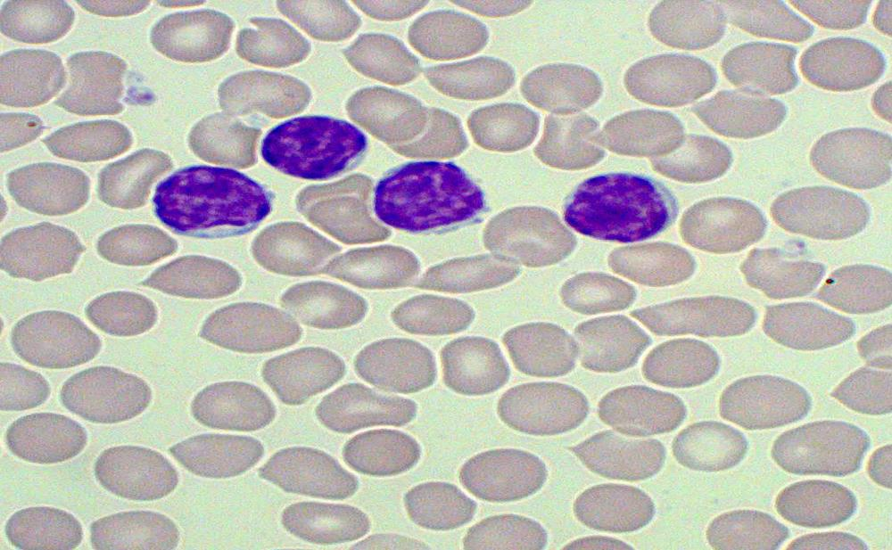
تصویری از لنفوسیتها| سلول یا گروه | جایگاه یا ویژگی گفتهشده در این جلسه |
|---|---|
| بازوفیل، ائوزینوفیل، نوتروفیل، مونوسیت، ماکروفاژ، NK cell و سلول دندریتیک | از سلولهای ایمنی ذاتی |
| سلولهای B و T | اساس اختصاصیت ایمنی اکتسابی |
| NK cell | لنفوئیدی از نظر ماهیت، اما متعلق به ایمنی ذاتی |
| رده اریتروئیدی و پلاکتها | جزو سلولهای سیستم ایمنی در نظر گرفته نمیشوند |
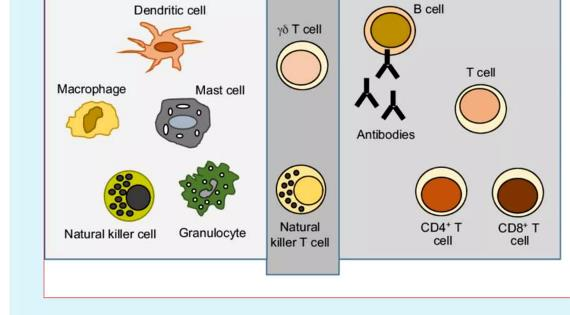
تصویر 11CD4-positive T cellها و CD8-positive T cellها از انواع T cell هستند. NKT cellها، ویژگیهایی از NK cell و T cell دارند. γδ T cellها نیز تا حدی میان دو بازوی ایمنی قرار میگیرند. در این مرحله، نام و جایگاه کلی این سلولها را به خاطر بسپارید؛ جزئیات بیشتری در جلسات بعد مطرح میشود.
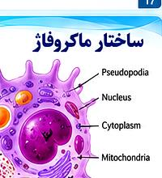
تصویر 12ماکروفاژها فاگوسیت(بیگانه خوار)های مهم بافتی در ایمنی ذاتیاند. آنها میکروبها، سلولهای مرده و بقایای بافتی را میبلعند و با ترشح cytokineها میتوانند التهاب را آغاز یا تنظیم کنند. برخی ماکروفاژها آنتیژن را به سلولهای T ارائه میکنند.
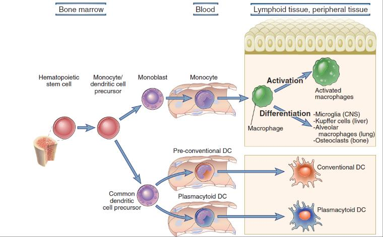
تصویر 13مونوسیتها در خون گردش میکنند و تا زمانی که در خون هستند، مونوسیت نامیده میشوند. هنگام خروج از رگ و عبور از دیواره اندوتلیال به بافت، به ماکروفاژ تبدیل میشوند و به نواحی التهاب یا حضور عامل میکروبی میروند. ماکروفاژها میتوانند فعال شوند؛ برای مثال، دریافت یا ترشح cytokineها میتواند در فعالشدن آنها نقش داشته باشد. ماکروفاژ فعال با عامل میکروبی مقابله میکند و میتواند آن را با فاگوسیتوز از بین ببرد. همچنین مونوسیت پس از ورود به بافت ممکن است بر اساس ماهیت آن بافت تمایز یابد و نام ماکروفاژ مقیم همان بافت را بگیرد.
ماکروفاژهای بافتی شامل این سلولها هستند:
| سلول بافتی | بافت یا محل ذکرشده |
|---|---|
| سلولهای Kupffer | کبد |
| microglia | سیستم عصبی مرکزی (CNS) |
| alveolar macrophages | ریه |
| osteoclasts | استخوان |
این سلولها از دودمان مونوسیت/ماکروفاژ معرفی شدهاند. Osteoclastها سلولهای مخرب استخواناند و از نظر ماهیت با ماکروفاژها ارتباط دارند.
مسیر مونوسیتی و دندریتیک از سلول بنیادی خونساز منشأ میگیرد. در مسیر مونوسیتی، ابتدا monoblast و سپس monocyte ایجاد میشود. پیشساز دندریتیک مشترک نیز میتواند به دو رده اصلی برسد:
conventional به معنی رایج یا معمول است و نام دیگر آن classic dendritic cell است. plasmacytoid dendritic cell رده جداگانهای است که بهویژه در ارتباط با ویروسها اهمیت دارد.
تصویر 13
| رده دندریتیک | نام یا ویژگی ذکرشده |
|---|---|
| conventional dendritic cell | رایج یا معمول؛ نام دیگر آن classic dendritic cell است |
| plasmacytoid dendritic cell | رده جداگانه، بهویژه مرتبط با ویروسها |
در بافت ملتهب، ماکروفاژها حضور پیدا میکنند و نوتروفیلها نیز به محل میآیند. نوتروفیلها و مونوسیتها با دیاپدز تغییر شکل میدهند و از میان سلولهای اندوتلیال دیواره رگ عبور میکتند تا به ناحیه عامل عفونی برسد. کار مونوسیت، تبدیل شدن به ماکروفاژ، و کار ماکروفاژ و نوتروفیل فاگوسیتوز است؛ یعنی بلعیدن عامل بیگانه.
| مرحله | رخداد |
|---|---|
| ۱ | شناسایی و اتصال میکروب به گیرندههای فاگوسیت |
| ۲ | احاطه میکروب و تشکیل فاگوزوم (phagosome) |
| ۳ | اتصال فاگوزوم به لیزوزوم و تشکیل فاگولیزوزوم (phagolysosome) |
| ۴ | تخریب میکروب و دفع مواد باقیمانده |
غشای ماکروفاژ ممکن است با ایجاد pseudopodia عامل میکروبی را احاطه کند؛ گیرندهها نیز میتوانند به شناسایی و اتصال کمک کنند.
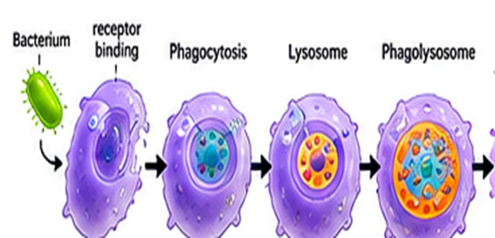
تصویر 14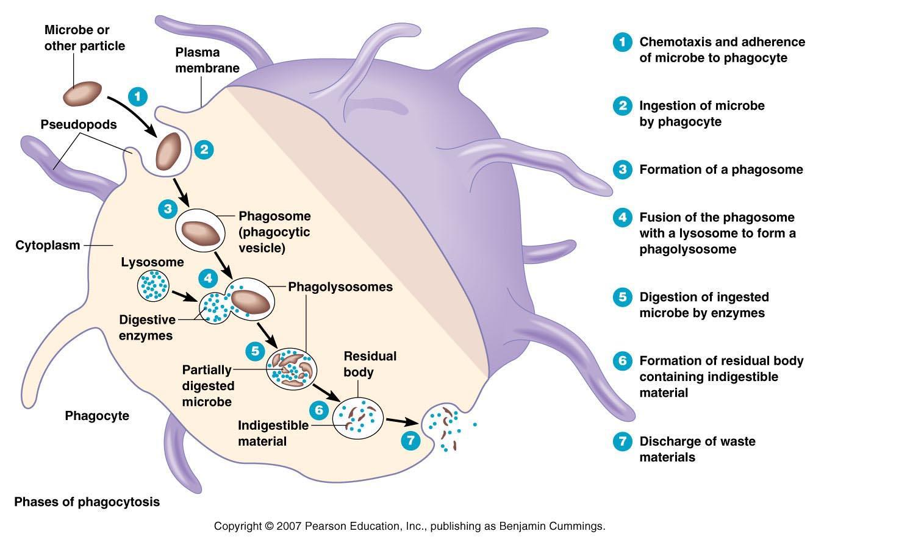
تصویر 15لیزوزوم (lysosome) وزیکولی حاوی آنزیمهایی است که میتوانند عامل میکروبی را تخریب کنند. برای اثرگذاری آنزیمها، غشای لیزوزوم با غشای فاگوزوم ادغام میشود و فاگولیزوزوم تشکیل میشود. آنزیمهای گرانولی و گونههای فعال اکسیژن (reactive oxygen species; ROS) در تخریب میکروب نقش دارند.
افزایش سریع مصرف اکسیژن در این فرایند انفجار تنفسی (respiratory burst یا oxidative burst) نام دارد. در این فرایند ROS، ازجمله superoxide anion (O₂⁻) و hydrogen peroxide (H₂O₂)، آزاد یا تولید میشود. بنابراین تخریب میکروب فقط به آنزیمهای گرانولی محدود نیست و ROS نیز در آن نقش دارد.
گرانولوسیتها سه گروه اصلی دارند: نوتروفیلها، ائوزینوفیلها و بازوفیلها. نوع گرانول، شکل هسته و عملکرد دفاعی این سه گروه متفاوت است.
نوتروفیلها فراوانترین لکوسیتهای خون محیطی انساناند. هسته چندقسمتی دارند؛ معمولاً سه تا پنج لوب برای آنها ذکر میشود. مهمترین ویژگی آنها فاگوسیتوز می باشد.
نوتروفیلها از نخستین سلولهای مهاجم در التهاب حاد و عفونتهای باکتریاییاند و از مهمترین فاگوسیتهای ایمنی ذاتی به شمار میروند. آنها گرانولهای اولیه و ثانویه دارند؛ گرانول ثانویه را گرانول اختصاصی نیز مینامند. گرانولهای اولیه و اختصاصی حاوی مواد میکروبکشاند که پس از فاگوسیتوز به تخریب میکروب کمک میکنند.
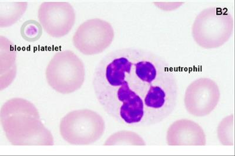
تصویر 17ائوزینوفیلها معمولاً هسته دولوبه (bilobed) دارند و گرانولهای اختصاصی درشت و نارنجیـقرمز آنها ویژگی مورفولوژیک مهمی است. Major basic protein (MBP) از اجزای مهم گرانولهای ائوزینوفیل است.
ائوزینوفیلها در دفاع علیه انگلهای بزرگ مانند کرمها و نیز در واکنشهای آلرژیک اهمیت دارند. در این بحث، منظور از انگلهای بزرگ بیشتر کرمهاست، نه تکیاختهها. ائوزینوفیلها حدود ۲ تا ۵ درصد WBC را تشکیل میدهند و افزایش آنها در برخی بیماریهای انگلی و آلرژیک دیده میشود.
افزایش ائوزینوفیل خون eosinophilia نام دارد. به همین ترتیب، neutrophilia یعنی افزایش نوتروفیلها و neutropenia یعنی کاهش آنها.
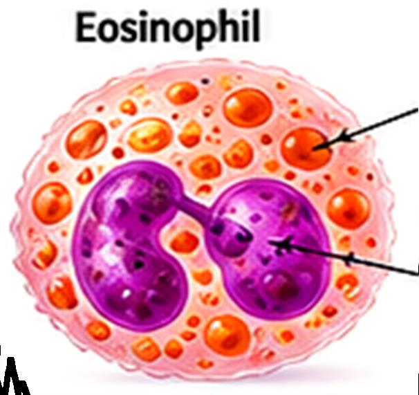
تصویر 19| اصطلاح | معنی |
|---|---|
| eosinophilia | افزایش ائوزینوفیل خون |
| neutrophilia | افزایش نوتروفیلها |
| neutropenia | کاهش نوتروفیلها |
بازوفیلها از کمتعدادترین لکوسیتهای خون محیطیاند. گرانولهای تیره آنها حاوی هیستامین و سایر میانجیهای التهابی است و در پاسخهای آلرژیک و واکنشهای وابسته به IgE نقش دارند.
IgE کمترین درصد را در خون دارد، اما در واکنش آلرژیک ممکن است مقدار آن بسیار افزایش یابد، حتی چندین برابر شود. سه موردی را که ممکن است در آلرژی افزایش یابند به خاطر بسپارید:
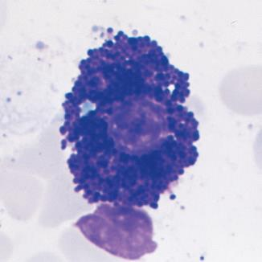
تصویر 20بااینحال، در بیماریهای آلرژیک افزایش IgE و ائوزینوفیل معمولاً اهمیت بیشتری دارد.
تصویر اسلاید که بهعنوان بازوفیل نشان داده شده، بیشتر به mast cell شباهت دارد: هسته روشنتر در مرکز است و گرانولهای آزوروفیلیک درشت و تیره اطراف آن قرار گرفتهاند. این تصویر، با وجود شباهت به mast cell، در اسلاید بهعنوان بازوفیل ارائه شده است. ممکن است بازوفیل در درصد بسیار کمی از موارد نمای مشابهی داشته باشد، اما معمولاً در mast cell گرانولهای درشت و تیره هسته را میپوشانند.
بازوفیل و mast cell هر دو در بیماریهای آلرژیک اهمیت دارند. mast cell از نظر مورفولوژی به بازوفیل شباهت دارد و در مبحث hypersensitivity نوع یک درباره هر دو صحبت میشود.
سلولهای دندریتیک از مهمترین سلولهای ارائهکننده آنتیژن (antigen-presenting cells; APCs) هستند. سلول دندریتیک در بافت آنتیژن را دریافت و پردازش میکند، سپس به اندام لنفاوی مهاجرت میکند و سلولهای T نابالغ را فعال میکند؛ به همین دلیل پلی میان ایمنی ذاتی و تطبیقی است.
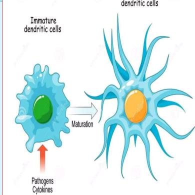
تصویر 21از تفاوتهای مورفولوژیک سلولهای دندریتیک بالغ و نابالغ، تعداد و شکل زوائد دندریتیک است. هر دو زائده دارند، اما سلول نابالغ ممکن است زوائد کمتری داشته باشد. چون فاگوسیتوز میکند، شکل آن میتواند شبیه آمیب باشد و زوائد کوتاه و بلند متفاوتی داشته باشد.
پس از بلوغ، زوائد بلندتر و منظمتر میشوند و مانند پرتوهایی که کودکان برای خورشید در نقاشی ها میکشند تقریباً یکدست و بلند در اطراف سلول قرار میگیرند. سلول بالغ زوائد فراوان دارد و در این مرحله کار اصلیاش دیگر فاگوسیتوز نیست؛ بلکه وظیفه دیگری دارد که ارائه آنتیژن بخش مهمی از آن است.
دو گروه اصلی سلول دندریتیک عبارتاند از:
| گروه سلول دندریتیک | زیرگروه یا ویژگی ذکرشده |
|---|---|
| Plasmacytoid DC | ردهای جداگانه و مرتبط با ویروسها |
| Classic یا conventional DC (cDC) | شامل immature DC (IDC) و mature DC (MDC) |
| Langerhans cell (LC) | در تقسیمبندی اسلاید، در گروه immature DC آمده است |
در این تقسیمبندی، Langerhans cell (LC) در پوست در گروه immature DC آمده است. Conventional/classic DC به دو گروه iDC و mDC تقسیم میشود. همچنین حروف اختصاری C و DC در عنوان conventional dendritic cell باید درست نوشته شوند.
سلول دندریتیک نابالغ هنوز با عامل میکروبی یا عامل بیگانه برخورد نکرده است و پس از برخورد میتواند آن را فاگوسیتوز کند.
سلول دندریتیک عامل را میبلعد و سپس از مسیر لنفی بهسمت نزدیکترین غده لنفی میرود؛ برای خراش دست، غده لنفی نزدیک در زیر بغل است. سلول ممکن است در مسیر با سلول T یا B برخورد کند، اما در غده لنفی که سلولها متراکماند، احتمال تماس بیشتر است. در آنجا آنتیژن را ارائه میکند.
با ورود به غده لنفی، سلول دندریتیک بالغ میشود و خاصیت فاگوسیتوز را از دست میدهد؛ وظیفه اصلی آن ارائه آنتیژن به سلولهای T است. این سلول را APC مینامند.
طبقهبندی کلی سلولهای دندریتیک چنین است:
سلولهای B جزء اصلی ایمنی هومورال (humoral immunity) هستند. در پستانداران، مراحل اصلی تکامل B cell در مغز استخوان انجام میشود. B cell با گیرنده سلول B (B-cell receptor; BCR) آنتیژن را مستقیماً شناسایی میکند.
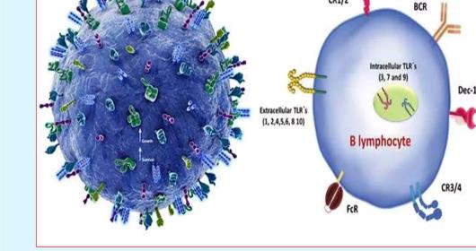
تصویر 24BCR از نظر ماهیت شبیه آنتیبادی است. آنتیبادی را immunoglobulin هم مینامند؛ علت این نامگذاری در جلسه مربوط به آنتیبادیها توضیح داده میشود. بخشی از immunoglobulinها غشاییاند و بخشی ترشحی؛ آنتیبادیهای ترشحی را plasma cellها تولید میکنند.
B cell میتواند به یکی از این سلولها تمایز یابد:
| سلول حاصل از تمایز B cell | نقش یا ویژگی |
|---|---|
| Plasma cell | تولیدکننده آنتیبادیهای ترشحی |
| Memory B cell | ممکن است سالها در بدن باقی بماند و در برخورد مجدد با همان عامل میکروبی پاسخ سریعتر و شدیدتری ایجاد کند |
روی سطح B cell، CD19 و CD21 در تقویت سیگنال فعالسازی نقش دارند. CD40 روی B cell با CD40L روی T cell کمکی تعامل میکند. MHC class II برای ارائه آنتیژن به T cell کمکی ضروری است. CD19 یک pan-marker برای B cellهاست؛ اگر پرسیده شود pan-marker سلول B چیست، پاسخ CD19 است.
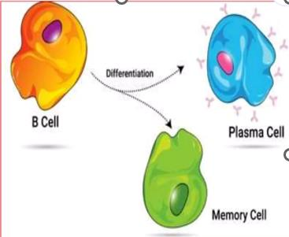
تصویر 25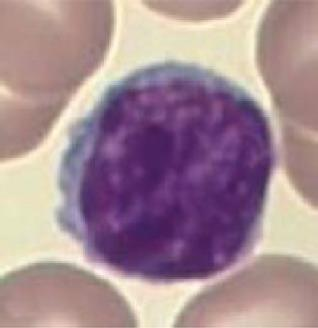
تصویر 26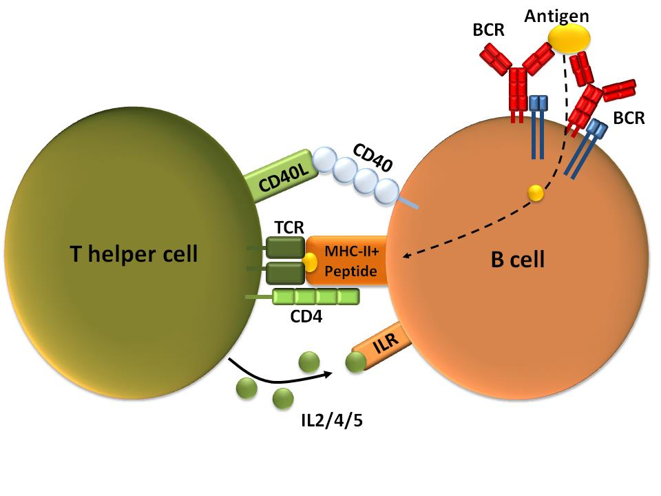
تصویر 28سلولهای T از پیشسازهای مغز استخوان منشأ میگیرند، اما در تیموس بالغ میشوند. گیرنده سلول T (T-cell receptor; TCR) پپتید آنتیژنی را در قالب MHC شناسایی میکند. سلولهای T جزء اصلی ایمنی سلولی (cell-mediated immunity) هستند و CD3، pan-marker سلول T است.
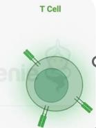
تصویر 29T cellها بر اساس زنجیرههای TCR به دو دسته اصلی تقسیم میشوند:
| نوع T cell | زنجیرههای TCR |
|---|---|
| αβ T cell | α و β |
| γδ T cell | γ و δ |
γδ T cellها معمولاً CD4 و CD8 ندارند و حدود ۴ تا ۵ درصد T cellهای خون محیطی انسان را تشکیل میدهند؛ بیشتر T cellهایی که مشاهده میشوند αβ T cell هستند. γδ T cellها در دوران جنینی فراوانترند و پس از تولد تعدادشان کمتر میشود. آنها بهعنوان پلی میان ایمنی ذاتی و تطبیقی عمل میکنند و در مقایسه با αβ T cellها عملکرد برجستهای در ایمنی اکتسابی ندارند.
انواع αβ T cell عبارتاند از:
| نوع αβ T cell | نقش یا ویژگی ذکرشده |
|---|---|
| T cell کمکی (Helper T; CD4+) | پاسخ ایمنی را هدایت میکند. |
| T cell سیتوتوکسیک (+Cytotoxic T; CD8) | سلولهای آلوده و توموری را از بین میبرد. |
| T cell تنظیمی (Regulatory T; T reg) | پاسخ بیشازحد را مهار و به حفظ تحمل ایمنی کمک میکند. |
| T cell حافظه (Memory T) | در مواجهه مجدد پاسخ سریعتری ایجاد میکند. |
Treg را پیشتر T suppressor نیز مینامیدند؛ اگر این نام را در کتابی دیدید، منظور همان T regulatory است. مهار پاسخ بیشازحد مهم است، زیرا اگر پاسخ ایمنی کنترل نشود، میتواند به سلولهای خودی آسیب بزند یا با بیماریهای خودایمنی همراه شود؛ این موضوع در مبحث hypersensitivity بیشتر بررسی میشود.
T cellها با دو ویژگی ایمنی اکتسابی، یعنی اختصاصیت و ایجاد حافظه، ارتباط دارند و میتوانند Memory T cell ایجاد کنند. CD4-positive T cell همان T helper و CD8-positive T cell همان T cytotoxic است.
NKT cellها ویژگیهایی از T cell و NK cell دارند. گیرنده T آنها عمدتاً آنتیژنهای گلیکولیپیدی را شناسایی میکند که توسط مولکول CD1 ارائه شدهاند. NKT cellها و γδ T cellها در این بحث ویژگیهای بینابینی دارند و پلی میان ایمنی ذاتی و تطبیقی ایجاد میکنند.
در ارائه آنتیژن، APC پپتید را روی MHC نمایش میدهد:
| نوع T cell | مولکول MHC که عمدتاً شناسایی میکند |
|---|---|
| T cell کمکی CD4+ | MHC II |
| T cell سیتوتوکسیک CD8+ | MHC I |
فعالشدن T به سیگنال آنتیژنی و کمکتحریکی (costimulation) نیاز دارد و cytokineها نیز نوع و شدت پاسخ بعدی را هدایت میکنند.
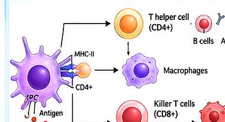
تصویر 42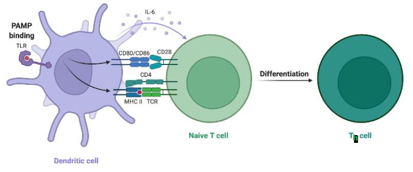
تصویر 43سه professional APC اصلی عبارتاند از:
در این بحث، منظور از ارائه آنتیژن توسط APC، ارائه به T cell است. همه سلولهای هستهدار MHC class I دارند؛ professional APCها علاوه بر آن، MHC class II و مولکولهای کمکتحریکی دارند. ممکن است سلولهای دیگری نیز در شرایطی نقش ارائه آنتیژن داشته باشند، اما dendritic cell، macrophage و B cell سه professional APC اصلیاند.
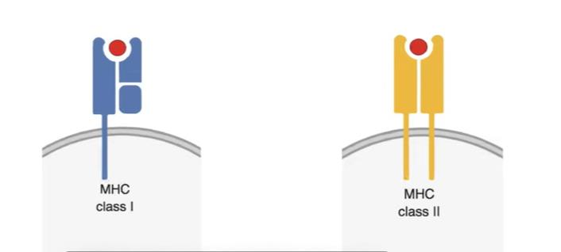
تصویر 30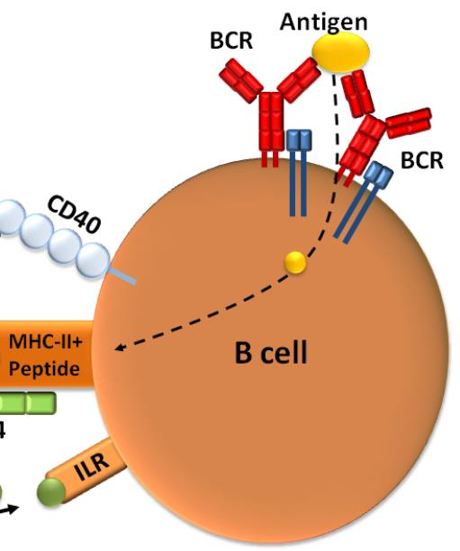
تصویر 31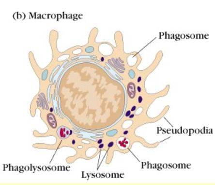
تصویر 32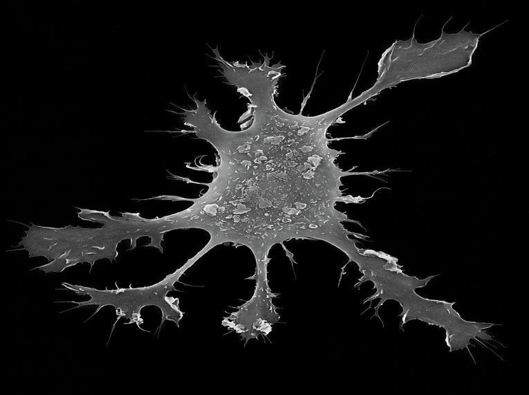
تصویر 33| گروه سلولی | مولکولها و ویژگیهای ذکرشده |
|---|---|
| همه سلولهای هستهدار | MHC class I |
| professional APCها: dendritic cell، macrophage و B cell | علاوه بر MHC class I، دارای MHC class II و مولکولهای کمکتحریکیاند |
NK cellها لنفوسیتهای ایمنی ذاتیاند و برای شناسایی هدف به گیرنده اختصاصی مانند TCR یا BCR وابسته نیستند. آنها در کنترل زودهنگام عفونتهای ویروسی و برخی تومورها نقش دارند. IFN-γ یکی از cytokineهای مهم تولیدشده توسط NK است. NK cellها CD16 و CD56 دارند.
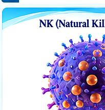
تصویر 34تعادل میان سیگنالهای گیرندههای فعالکننده و مهارکننده، فعالیت NK را تعیین میکند. کاهش MHC class I میتواند حساسیت سلول هدف به NK را افزایش دهد. NK با Perforin و Granzymes موجب القای apoptosis در سلول هدف میشود.
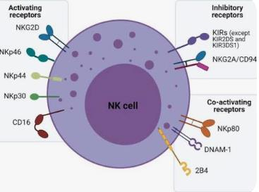
تصویر 35| ویژگی NK cell | توضیح |
|---|---|
| نوع ایمنی | لنفوسیت ایمنی ذاتی |
| گیرنده اختصاصی برای شناسایی هدف | برای شناسایی هدف به TCR یا BCR وابسته نیست |
| نقش | کنترل زودهنگام عفونتهای ویروسی و برخی تومورها |
| cytokine مهم تولیدشده | IFN-γ |
| نشانگرهای ذکرشده | CD16 و CD56 |
| تنظیم فعالیت | تعادل سیگنالهای گیرندههای فعالکننده و مهارکننده |
| اثر کاهش MHC class I | میتواند حساسیت سلول هدف به NK را افزایش دهد |
| عوامل کشتن سلول هدف | Perforin و Granzymes؛ القای apoptosis |
سلول T سیتوتوکسیک (cytotoxic T cell) نیز میتواند به سلول آلوده نزدیک شود و با آن تماس برقرار کند. در کلیپی که در کلاس معرفی شد، سلول T سیتوتوکسیک در بالای تصویر و سلول آلوده در پایین دیده میشود. میان آنها پل یا ارتباطی سیتوپلاسمی ایجاد میشود؛ آنزیمهایی مانند granzymes آزاد و وارد سلول آلوده میشوند.
سلول آلوده ابتدا منقبض میشود و تغییراتی در سطح آن ایجاد میشود؛ در توضیح کلیپ، از ایجاد سوراخ در غشای سطحی و بیرونریختن محتویات سلول آلوده نیز صحبت شد. پس از کشتن هدف، سلول T میتواند جدا شود، سلول دیگری را پیدا کند و آن را نیز از بین ببرد. سلولهایی که عوامل بیماریزا را پاکسازی میکنند، در بدن نیز پیوسته فعالاند.
کلیپ را Mike Oldstone از Scripps Research Institute در San Diego تهیه کرده بود و از YouTube گرفته شده بود. نسخههای کلیپ، ازجمله نسخه بدون زیرنویس و نسخه دارای زیرنویس فارسی، برای استفاده روی Desktop قرار داده میشوند. زیرنویس فارسی با هوش مصنوعی اضافه شده بود و ممکن بود گاهی جای بعضی واژهها دقیق نباشد. توصیه شد کلیپ پس از پایان صحبتهای مدرس دیده شود؛ در یکی دو جلسه بعد، بهویژه هنگام بررسی T cytotoxic، توضیحات بیشتری درباره آن ارائه خواهد شد.
| سلول | نقش ذکرشده |
|---|---|
| نوتروفیل و ماکروفاژ | با فاگوسیتوز میکروبها را میبلعند و از بین میبرند |
| سلول دندریتیک | آنتیژن را ارائه میکند و پاسخ T را آغاز میکند |
| سلول B | آنتیبادی تولید میکند و حافظه هومورال ایجاد میکند |
| سلولهای T و NK | سلولهای هدف را از بین میبرند |
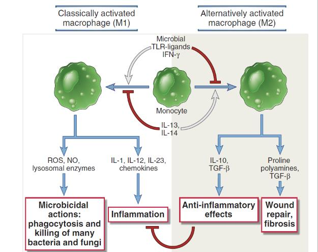
محل منشأ اصلی: کبد جنینی
ویژگی: تولید آنتیبادیهای طبیعی، عمدتاً IgM، حتی بدون مواجهه قبلی با آنتیژن اختصاصی.
نقش: دفاع سریع و اولیه در برابر برخی میکروبها و آنتیژنهای پلیساکاریدی.
مثال: تولید IgM طبیعی علیه برخی ساختارهای باکتریایی.
محل تکامل: مغز استخوان؛ سپس بلوغ نهایی در اندامهای لنفاوی محیطی.
ویژگی: بیان IgM و IgD روی سطح سلول بالغ نابالغنبوده (سلول بالغِ نایو).
نقش: پاسخ ایمنی اختصاصی و وابسته به کمک سلول T، تشکیل مرکز زایگر (Germinal center)، تعویض کلاس آنتیبادی و ایجاد حافظه ایمنی.
مثال: تولید IgG اختصاصی پس از واکسیناسیون.
محل اصلی: ناحیه حاشیهای طحال.
ویژگی: پاسخ سریع به آنتیژنهای موجود در خون، بهویژه آنتیژنهای پلیساکاریدی.
نقش: تولید سریع آنتیبادی، اغلب IgM، با پاسخ معمولاً مستقل از سلول T.
مثال: پاسخ به پلیساکاریدهای کپسول برخی باکتریهای پوششدار.
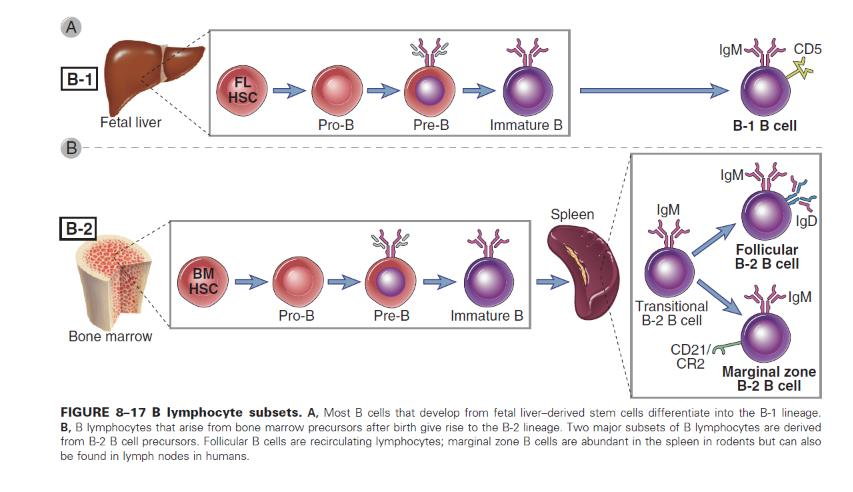
تصویر 39| رده یا زیرگروه | منشأ یا ویژگی درجشده |
|---|---|
| B-1 | در توضیح شکل، بیشتر B cellهایی که از stem cellهای منشأگرفته از کبد جنینی ایجاد میشوند، به این رده تمایز مییابند. |
| B-2 | B lymphocyteهایی که پس از تولد از پیشسازهای مغز استخوان به وجود میآیند، این رده را ایجاد میکنند. |
| Follicular B cell | یکی از دو زیرگروه اصلی حاصل از پیشسازهای B-2؛ لنفوسیتهای بازچرخشی |
| Marginal zone B cell | یکی از دو زیرگروه اصلی حاصل از پیشسازهای B-2؛ در جوندگان در طحال فراوان است و در انسان در گرههای لنفاوی نیز یافت میشود. |
مسیر شکل، مراحل pre-B، immature B cell و transitional را هم نشان میدهد.
FDCها سلولهایی دارای زوائد غشاییاند که در مراکز زایگر (germinal centers) فولیکولهای لنفاوی (lymphoid follicles) در گرههای لنفاوی، طحال و بافتهای لنفاوی مخاطی دیده میشوند.
FDCها از پیشسازهای مغز استخوان (bone marrow precursors) منشأ نمیگیرند و از نظر منشأ و عملکرد با سلولهای دندریتیکیای که آنتیژن را به T lymphocyteها ارائه میکنند (antigen-presenting dendritic cells) ارتباطی ندارند. FDCها آنتیژنهایی را که به آنتیبادیها (antibodies) یا محصولات کمپلمان (complement products) متصل شدهاند، به دام میاندازند و روی سطح خود نگه میدارند تا B lymphocyteها آنها را شناسایی کنند.
| ویژگی FDCها | توضیح |
|---|---|
| محل حضور | مراکز زایگر فولیکولهای لنفاوی در گرههای لنفاوی، طحال و بافتهای لنفاوی مخاطی |
| منشأ | از پیشسازهای مغز استخوان منشأ نمیگیرند |
| ارتباط با antigen-presenting dendritic cells | از نظر منشأ و عملکرد با آنها ارتباطی ندارند |
| نگهداری آنتیژن | آنتیژن متصل به آنتیبادی یا محصولات کمپلمان را به دام میاندازند و روی سطح نگه میدارند |
| سلول هدف برای شناسایی آنتیژن | B lymphocyteها |
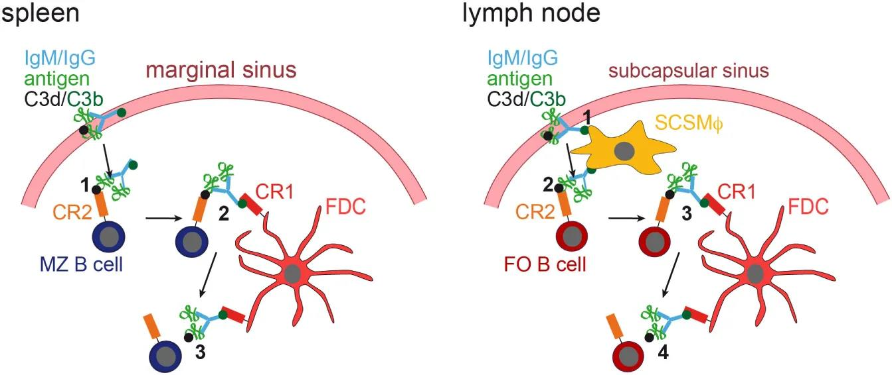
تصویر 40ایمنی مؤثر حاصل همکاری سلولهای ایمنی ذاتی و تطبیقی است. هر سلول ساختار و وظیفه تخصصی دارد، اما عملکرد سلولها به یکدیگر وابسته است. Cytokineها و تماسهای سلولی شبکه ارتباطی این مجموعه را میسازند و هدف نهایی، حذف عامل خطر با حداقل آسیب به بافت خودی است.
در جلسهای که برای معرفی سلولهای ایمنی در یک ساعتونیم برگزار میشود، مطالب ناگزیر فشردهاند و بعضی موضوعها به جلسات اختصاصی خود موکول میشوند. نکات این جلسه مقدمهای برای بررسی جزئیتر سلولهاست؛ در جلسه بعد درباره بافتها و ارگانهای سیستم ایمنی صحبت میشود.
در پایان اسلاید عبارت «سپاس از توجه شما» آمده است.
تصاویر، آنتیژن متصل به IgM/IgG و C3d/C3b را در ارتباط با follicular B cell و marginal zone B cell در گره لنفاوی و طحال نشان میدهند.
| سلول | میانگین در هر میکرولیتر | محدوده در هر میکرولیتر |
|---|---|---|
| لکوسیتها (white blood cells; leukocytes) | ۷۴۰۰ | ۴۵۰۰-۴۰۰۰ تا ۱۱۰۰۰ |
| نوتروفیلها | ۴۴۰۰ | ۱۸۰۰ تا ۷۷۰۰ |
| ائوزینوفیلها | ۲۰۰ | صفر تا ۴۵۰ |
| بازوفیلها | ۴۰ | صفر تا ۲۰۰ |
| لنفوسیتها | ۲۵۰۰ | ۱۰۰۰ تا ۴۸۰۰ |
| مونوسیتها | ۳۰۰ | صفر تا ۸۰۰ |
| نوع لکوسیت | درصد یا میزان ذکرشده در WBC |
|---|---|
| نوتروفیل | حدود ۴۰ تا ۷۰ درصد؛ گاهی میانگین نزدیک ۷۰ درصد |
| لنفوسیت | حدود ۲۰ تا ۴۰ درصد |
| مونوسیت | حدود ۱ تا ۸ درصد |
| ائوزنوفیل | حدود ۲ تا ۵ درصد |
| بازوفیل | ممکن است دیده نشود یا بسیار کم باشد؛ صفر تا نیم درصد یا صفر تا یک درصد |
| یافته خون محیطی | مقدار ذکرشده |
|---|---|
| WBC در توضیح صوتی | حدود ۴۰۰۰ تا ۱۱۰۰۰ سلول در هر میکرولیتر |
| WBC در جدول اسلاید | ۴۵۰۰ تا ۱۱۰۰۰ سلول در هر میکرولیتر |
| پلاکت | حدود ۱۵۰ هزار تا ۴۵۰ هزار |
| RBC | حدود پنج میلیون |
| دسته | سلولها یا ویژگی |
|---|---|
| گرانولوسیتها | نوتروفیل، ائوزینوفیل و بازوفیل؛ وجود گرانولهای مشخص در سیتوپلاسم مبنای نامگذاری است |
| آگرانولوسیتها | مونوسیت و لنفوسیت؛ گرانولهای مشخصِ مبنای دستهبندی گرانولوسیتی دیده نمیشوند |
| ایمنی ذاتی | بازوفیل، ائوزینوفیل، نوتروفیل، مونوسیت، ماکروفاژ، NK cell و سلول دندریتیک |
| ایمنی تطبیقی | سلولهای B و T اساس اختصاصیت آن را میسازند |
| NK cell | از نظر شکل لنفوسیتی است، اما به ایمنی ذاتی تعلق دارد |
| خارج از سلولهای سیستم ایمنی در این درس | رده اریتروئیدی و پلاکتها |
| مسیر یا سلول | اطلاعات مسیر |
|---|---|
| سلول بنیادی خونساز | در مغز استخوان؛ دارای خودنوزایی و تمایز |
| Common myeloid progenitor | منشأ شاخههایی به گرانولوسیتها، مونوسیتها، سلولهای دندریتیک، mast cellها، اریتروسیتها و megakaryocyteها |
| Common lymphoid progenitor | یکی از دو progenitor اصلی در تصویر کلی |
| Megakaryocyte | سلول مادری تولیدکننده پلاکت |
| مسیر مونوسیتی | monoblast و سپس monocyte |
| پیشساز دندریتیک مشترک | میتواند به conventional dendritic cell یا plasmacytoid dendritic cell برسد |
| عامل | ارتباط یا نقش ذکرشده |
|---|---|
| SCF | cytokine و growth factor مهم در تنظیم تولید سلولهای خونی، بقای سلولها و رشد بافتی؛ با اتصال به c-Kit/CD117 عمل میکند |
| Flt3L | مخفف FMS-like tyrosine kinase 3 ligand؛ سلول را بهسمت رده دندریتیک میبرد |
| GM-CSF | بر سلولهای گرانولوسیتی و مونوسیتی اثر میگذارد |
| G-CSF | به رده granulocyte مربوط است؛ نکته اصلی نمودار و کتاب ابو العباس، ارتباط ویژه آن با تولید نوتروفیل است |
| M-CSF | به رده مونوسیتی مربوط است و در مسیر monoblast و سپس monocyte نقش دارد |
| IL-5 | growth factor ائوزینوفیل |
| Thrombopoietin و IL-11 | در افزایش و تمایز سلولهایی که قرار است به پلاکت تبدیل شوند نقش دارند |
| اصطلاح یا قاعده ارتباطی | توضیح |
|---|---|
| monokine | نامی که پیشتر برای cytokineهایی به کار میرفت که تصور میشد فقط مونوسیتها تولید میکنند |
| lymphokine | نامی که پیشتر برای cytokineهایی به کار میرفت که تصور میشد فقط لنفوسیتها تولید میکنند |
| تولید cytokine | بسیاری از سلولها، حتی سلولهای غیرایمنی، cytokine تولید میکنند |
| cross-talk | ارتباط از راه تماس مستقیم و انتقال سیگنال یا از راه دور، با ترشح cytokine |
| اثر cytokine | سلول باید receptor همان cytokine را داشته باشد |
| سلول بافتی | بافت یا محل ذکرشده |
|---|---|
| سلولهای Kupffer | کبد |
| microglia | سیستم عصبی مرکزی (CNS) |
| alveolar macrophages | ریه |
| osteoclasts | استخوان؛ سلولهای مخرب استخوان و مرتبط با ماکروفاژها |
| رده دندریتیک | نام یا ویژگی |
|---|---|
| conventional dendritic cell | رایج یا معمول؛ نام دیگر آن classic dendritic cell است |
| plasmacytoid dendritic cell | رده جداگانه، بهویژه مرتبط با ویروسها |
| Classic یا conventional DC (cDC) | شامل immature DC (iDC) و mature DC (mDC) |
| Langerhans cell (LC) | در تقسیمبندی اسلاید، در گروه immature DC آمده است |
| ویژگی بلوغ سلول دندریتیک | Immature DC | Mature DC |
|---|---|---|
| زوائد دندریتیک | ممکن است کمتر و با طولهای متفاوت باشند | فراوان، بلندتر و منظمتر؛ تقریباً یکدست و شعاعی |
| فاگوسیتوز | سلول نابالغ میتواند فاگوسیتوز کند | پس از بلوغ، کار اصلی فاگوسیتوز نیست |
| نقش در ارائه آنتیژن | در بافت آنتیژن را دریافت و پردازش میکند | در اندام لنفاوی آنتیژن را به T cell ارائه میکند |
| سلول یا مولکول | نقش یا ویژگی |
|---|---|
| B cell | جزء اصلی ایمنی هومورال؛ مراحل اصلی تکامل آن در پستانداران در مغز استخوان است |
| BCR | آنتیژن را مستقیماً شناسایی میکند؛ از نظر ماهیت شبیه آنتیبادی است |
| Plasma cell | تولیدکننده آنتیبادیهای ترشحی |
| Memory B cell | ممکن است سالها باقی بماند و در مواجهه مجدد پاسخ سریعتر و شدیدتری ایجاد کند |
| CD19 و CD21 | روی B cell در تقویت سیگنال فعالسازی نقش دارند |
| CD40 و CD40L | CD40 روی B cell با CD40L روی T cell کمکی تعامل میکند |
| MHC class II | برای ارائه آنتیژن به T cell کمکی ضروری است |
| CD19 | pan-marker سلولهای B |
| T cell | از پیشسازهای مغز استخوان منشأ میگیرد و در تیموس بالغ میشود؛ جزء اصلی ایمنی سلولی |
| TCR | پپتید آنتیژنی را در قالب MHC شناسایی میکند |
| CD3 | pan-marker سلولهای T |
| نوع T cell | زنجیرههای TCR یا نقش |
|---|---|
| αβ T cell | زنجیرههای α و β؛ بیشتر T cellهای مشاهدهشده از این نوعاند |
| γδ T cell | زنجیرههای γ و δ؛ معمولاً CD4 و CD8 ندارند، حدود ۴ درصد یا در توضیحی دیگر ۴ تا ۵ درصد T cellهای خون محیطی را تشکیل میدهند؛ در دوران جنینی فراوانترند و پلی میان دو بازوی ایمنیاند |
| Helper T (CD4+) | پاسخ ایمنی را هدایت میکند |
| Cytotoxic T (CD8+) | سلولهای آلوده و توموری را از بین میبرد |
| Treg | پاسخ بیشازحد را مهار و به حفظ تحمل ایمنی کمک میکند؛ پیشتر T suppressor نیز نامیده میشد |
| Memory T | در مواجهه مجدد پاسخ سریعتری ایجاد میکند |
| NKT cell | ویژگیهایی از T cell و NK cell دارد؛ گیرنده T آن عمدتاً آنتیژن گلیکولیپیدی ارائهشده توسط CD1 را شناسایی میکند |
| مرحله فاگوسیتوز | رخداد |
|---|---|
| ۱ | شناسایی و اتصال میکروب به گیرندههای فاگوسیت |
| ۲ | احاطه میکروب و تشکیل فاگوزوم (phagosome) |
| ۳ | اتصال فاگوزوم به لیزوزوم و تشکیل فاگولیزوزوم (phagolysosome) |
| ۴ | تخریب میکروب و دفع مواد باقیمانده |
| اصطلاح یا عامل | نقش |
|---|---|
| لیزوزوم (lysosome) | وزیکول حاوی آنزیمهای تخریبکننده عامل میکروبی |
| ROS | از عوامل دخیل در تخریب میکروب، در کنار آنزیمهای گرانولی |
| respiratory burst یا oxidative burst | افزایش سریع مصرف اکسیژن؛ همراه با تولید یا آزادشدن ROS ازجمله O₂⁻ و H₂O₂ |
| دیاپدز | عبور نوتروفیل، با تغییر شکل، از میان سلولهای اندوتلیال دیواره رگ |
| نوع T cell | مولکول MHC که عمدتاً شناسایی میکند |
|---|---|
| T cell کمکی CD4+ | MHC II |
| T cell سیتوتوکسیک CD8+ | MHC I |
| گروه سلولی | مولکولها و ویژگیهای ذکرشده |
|---|---|
| همه سلولهای هستهدار | MHC class I |
| professional APCها: dendritic cell، macrophage و B cell | علاوه بر MHC class I، دارای MHC class II و مولکولهای کمکتحریکیاند |
فعالشدن T به سیگنال آنتیژنی و کمکتحریکی (costimulation) نیاز دارد و cytokineها نوع و شدت پاسخ بعدی را هدایت میکنند.
| ویژگی NK cell | توضیح |
|---|---|
| نوع ایمنی | لنفوسیت ایمنی ذاتی |
| گیرنده اختصاصی برای شناسایی هدف | برای شناسایی هدف به TCR یا BCR وابسته نیست |
| نقش | کنترل زودهنگام عفونتهای ویروسی و برخی تومورها |
| cytokine مهم تولیدشده | IFN-γ |
| نشانگرهای ذکرشده | CD16 و CD56 |
| تنظیم فعالیت | تعادل سیگنالهای گیرندههای فعالکننده و مهارکننده |
| اثر کاهش MHC class I | میتواند حساسیت سلول هدف به NK را افزایش دهد |
| عوامل کشتن سلول هدف | Perforin و Granzymes؛ القای apoptosis |
| رده یا زیرگروه | منشأ یا ویژگی درجشده |
|---|---|
| B-1 | در توضیح شکل، بیشتر B cellهایی که از stem cellهای منشأگرفته از کبد جنینی ایجاد میشوند، به این رده تمایز مییابند |
| B-2 | B lymphocyteهایی که پس از تولد از پیشسازهای مغز استخوان به وجود میآیند، این رده را ایجاد میکنند |
| Follicular B cell | یکی از دو زیرگروه اصلی حاصل از پیشسازهای B-2؛ لنفوسیتهای بازچرخشی |
| Marginal zone B cell | یکی از دو زیرگروه اصلی حاصل از پیشسازهای B-2؛ در جوندگان در طحال فراوان است و در انسان در گرههای لنفاوی نیز یافت میشود |
| مراحل نشاندادهشده در شکل | pre-B، immature B cell و transitional |
| ویژگی FDCها | توضیح |
|---|---|
| محل حضور | مراکز زایگر فولیکولهای لنفاوی در گرههای لنفاوی، طحال و بافتهای لنفاوی مخاطی |
| منشأ | از پیشسازهای مغز استخوان منشأ نمیگیرند |
| ارتباط با antigen-presenting dendritic cells | از نظر منشأ و عملکرد با آنها ارتباطی ندارند |
| نگهداری آنتیژن | آنتیژن متصل به آنتیبادی یا محصولات کمپلمان را به دام میاندازند و روی سطح نگه میدارند |
| سلول هدف برای شناسایی آنتیژن | B lymphocyteها |
| مولکولهای نشاندادهشده در تصاویر | آنتیژن متصل به IgM/IgG و C3d/C3b در ارتباط با follicular B cell و marginal zone B cell در گره لنفاوی و طحال |
دو بازوی اصلی سیستم ایمنی را از نظر سرعت، اختصاصیت و حافظه مقایسه کنید و جایگاه NK cell و سلولهای B و T را توضیح دهید.
ایمنی ذاتی پاسخی سریع و از پیش آماده است و NK cell به آن تعلق دارد. ایمنی تطبیقی پاسخی اختصاصی و دارای حافظه است و سلولهای B و T اساس اختصاصیت آن را میسازند. NK cell از نظر شکل لنفوسیتی است، اما بخشی از ایمنی ذاتی محسوب میشود.
مسیر فاگوسیتوز را از شناسایی میکروب تا تخریب آن شرح دهید و نقش ROS را بیان کنید.
ابتدا میکروب شناسایی و به گیرندههای فاگوسیت متصل میشود؛ سپس احاطه میشود و فاگوزوم تشکیل میدهد. فاگوزوم با لیزوزوم ادغام میشود و فاگولیزوزوم شکل میگیرد؛ پس از آن، میکروب تخریب و مواد باقیمانده دفع میشوند. آنزیمهای گرانولی و ROS در تخریب میکروب نقش دارند. افزایش سریع مصرف اکسیژن در این فرایند respiratory burst یا oxidative burst نام دارد.
توضیح دهید سلول دندریتیک چگونه پلی میان ایمنی ذاتی و تطبیقی ایجاد میکند.
سلول دندریتیک در بافت آنتیژن را دریافت و پردازش میکند و پس از مهاجرت به اندام لنفاوی، سلولهای T نابالغ را فعال میکند. پس از ورود به غده لنفی بالغ میشود و وظیفه اصلی آن ارائه آنتیژن به سلولهای T است.
انواع αβ T cell را نام ببرید و نقش هرکدام را بر اساس محتوای درس بیان کنید.
T cell کمکی (CD4+) پاسخ ایمنی را هدایت میکند؛ T cell سیتوتوکسیک (CD8+) سلولهای آلوده و توموری را از بین میبرد؛ Treg پاسخ بیشازحد را مهار و به حفظ تحمل ایمنی کمک میکند؛ و Memory T در مواجهه مجدد پاسخ سریعتری ایجاد میکند.
تفاوت M1 و M2 را بر پایه عوامل و کارکردهای درجشده در اسلاید شرح دهید.
در نمودار، microbial TLR-ligands و IFN-γ با فعالسازی M1 همراهاند. برای M1 موادی مانند ROS، NO، IL-1، IL-12، IL-23، lysosomal enzymes و chemokines و کارکردهایی مانند میکروبکشی، فاگوسیتوز و کشتن بسیاری از باکتریها و قارچها درج شده است. IL-13 و IL-14 با مسیر M2 آمدهاند؛ برای M2، IL-10، TGF-β، proline و polyamines و اثرهای ضدالتهابی و کمک به ترمیم زخم درج شدهاند. عبارت IL-14 در اسلاید نیازمند بررسی است.
کدام گزینه محدوده درجشده در جدول اسلاید برای WBC را نشان میدهد؟
محدوده جدول اسلاید ۴۵۰۰ تا ۱۱۰۰۰ است؛ توضیح صوتی ۴۰۰۰ تا ۱۱۰۰۰ را ذکر میکند و این اختلاف در یادداشت بررسی حفظ شده است.
کدام گروه در دسته گرانولوسیتها قرار میگیرد؟
گرانولوسیتها شامل نوتروفیل، ائوزینوفیل و بازوفیلاند؛ مونوسیت و لنفوسیت آگرانولوسیت محسوب میشوند.
کدام گزینه درباره G-CSF با نکته اصلی نمودار و کتاب ابو العباس مطابق است؟
در مسیر نشاندادهشده، G-CSF با تبدیل به myeloblast و سپس نوتروفیل ارتباط دارد؛ ارتباط ویژه آن با تولید نوتروفیل مورد تأکید قرار گرفته است.
کدام رخداد بلافاصله پس از تشکیل فاگوزوم در ترتیب مراحل فاگوسیتوز قرار دارد؟
پس از احاطه میکروب و تشکیل فاگوزوم، فاگوزوم به لیزوزوم متصل میشود و فاگولیزوزوم تشکیل میگردد.
کدام توصیف درباره سلول دندریتیک بالغ درست است؟
طبق درس، سلول دندریتیک با ورود به غده لنفی بالغ میشود و وظیفه اصلی آن ارائه آنتیژن به سلولهای T است.
کدام گزینه نقش plasma cell را درست بیان میکند؟
Plasma cellها آنتیبادیهای ترشحی تولید میکنند.
کدام مولکول pan-marker سلولهای T است؟
CD3، pan-marker سلول T است؛ CD19 بهعنوان pan-marker سلول B ذکر شده است.
T cell کمکی CD4+ عمدتاً کدام آنتیژن را شناسایی میکند؟
T cell کمکی CD4+ عمدتاً آنتیژن ارائهشده روی MHC II را میشناسد.
کدام گزینه ویژگی NK cell را مطابق درس نشان میدهد؟
NK cell لنفوسیت ایمنی ذاتی است، برای شناسایی هدف به TCR یا BCR وابسته نیست و CD16 و CD56 دارد.
کدام گزینه درباره FDCها درست است؟
FDCها آنتیژن متصل به آنتیبادی یا محصولات کمپلمان را به دام میاندازند و روی سطح خود نگه میدارند تا B lymphocyteها آن را شناسایی کنند.
ادیتور: امیر حسین شکریزاده
منابع استفادهشده: ویس و اسلاید های کلاس